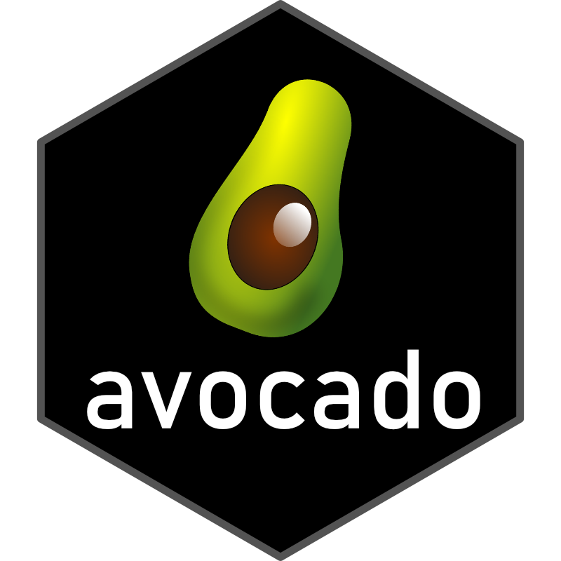

avocado 
The {avocado} package provides a summary of weekly Hass avocado sales for the contiguous United States. The underlying data are from The Hass Avocado Board (free registration required). Hass Avocados are the most popular variety of avocados sold in the United States and the Haas Avocado Board (HAB) provides crucial data on them to growers and marketers.
The HAB makes this information available to anyone who may be interested (free registration required). An important note to remember is that the term ‘units’ typically refers to 1 avocado. It does not refer to avocados in terms of weight, bags, etc. The HAB does not provide (at least publicly) actual piece-count sales to retailers or consumers.
About the PLUs
The {avocadoo} package consists of 3 primary PLUs:
- 4046: non-organic small/medium Hass Avocados (~3-5 oz); also known as Hass #60 size or smaller
- 4225: non-organic large Hass Avocados (~8-10 oz); also known as Hass #40 size and Hass #48 size
- 4770: non-organic extra large Hass Avocados (~10-15 oz); also known as Hass #36 size or larger
Organic avocados have the digit 9 prefixed to the non-organic PLUs: * 94046: organic small/medium Hass Avocados (~3-5 oz) * 94225: organic large Hass Avocados (~8-10 oz) * 94770: organic extra large Hass Avocados (~10-15 oz)
Source: Love One Today
Bags vs PLU
HAB also tracks avocado sales in bags of varying sizes. Since 2021, HAB does not break down units of avocados sold by bag size (e.g., small, large, extra large). Bags can consist of multiple avocados and can weights of bags can vary.
See this vignette for more information.
Installation
Install the development version from GitHub:
# install.packages("devtools")
devtools::install_github("nikdata/avocado", ref = 'main')Datasets
The {avocado} package consists of three different datasets:
-
hass_usa: weekly contiguous US avocado sales at the country level -
hass_region: weekly contiguous US avocado sales at the region level -
hass_market: weekly contiguous US avocado sales at the city/sub-region (i.e., market) level
Example
The hass_market dataset provides a weekly sales summary of Hass Avocado sales in the contiguous US (subdivided by region and select cites/sub-regions within each ‘parent’ region):
library(avocado)
dplyr::glimpse(hass_market)
#> Rows: 38,522
#> Columns: 13
#> $ region <chr> "Northeast", "Southeast", "Midsouth", "West"…
#> $ market <chr> "Albany", "Atlanta", "Baltimore/Washington",…
#> $ week_ending <date> 2017-01-02, 2017-01-02, 2017-01-02, 2017-01…
#> $ type <chr> "Conventional", "Conventional", "Conventiona…
#> $ avg_selling_price <dbl> 1.47, 0.93, 1.47, 0.92, 1.29, 1.43, 1.21, 1.…
#> $ total_bulk_and_bags_units <dbl> 129949, 547566, 631761, 104511, 458831, 1053…
#> $ plu4046_units <dbl> 4846, 224074, 54531, 27846, 4120, 1286, 4776…
#> $ plu4225_units <dbl> 117028, 118927, 408953, 9409, 371224, 58532,…
#> $ plu4770_units <dbl> 201, 338, 14388, 11342, 3934, 103, 15037, 11…
#> $ total_bagged_units <dbl> 7875, 204229, 153892, 55915, 79554, 45430, 5…
#> $ sml_bagged_units <dbl> 7867, 111600, 151346, 53094, 79340, 45156, 4…
#> $ lrg_bagged_units <dbl> 8, 92629, 2543, 2794, 214, 256, 13712, 1079,…
#> $ xlrg_bagged_units <dbl> 0, 0, 4, 28, 0, 19, 47, 5090, 2, 0, 917, 98,…